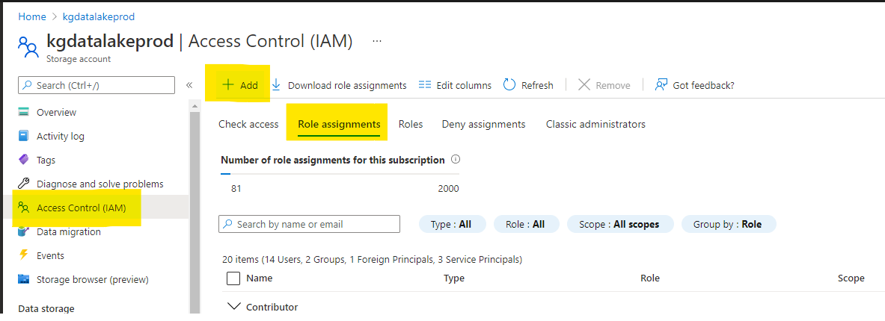
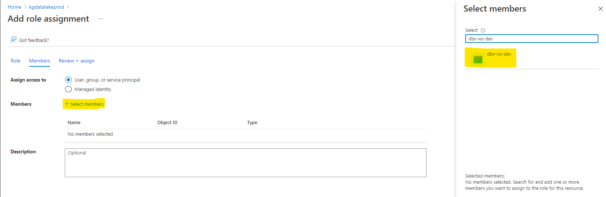

Using production data in dev environment¶
Sometimes it's necessary to have production data on the development environment. For example a Data Scientist needs to build model on a real full dataset, but you don't want to give them write access to the production environment.
In this section we will show how it can be accomplished on Azure Databricks and Azure Data Lake Storage gen2, but this principle can be generalized to any Databricks workspace and storage.
Prerequisites¶
Available since
- datalake-bundle=^1.2.1
Development environment¶
- Databricks workspace named dbx-ws-dev
- Storage Account (gen2) named datalakedev
- Service principal for authentication from Databricks to Storage named the same as the Databricks workspace dbx-ws-dev
Production environment¶
- Databricks workspace named dbx-ws-prod
- Storage Account (gen2) named datalakeprod
- Service principal for authentication from Databricks to Storage named the same as the Databricks workspace dbx-ws-prod
1. Setting permissions¶
First it is necessary to give the dev service principal read access to the prod storage.
- Go to the datalakeprod resource in Azure portal and select Access Control (IAM) and click on Add

- Select Storage Blob Data Reader role and click Next

- Click Select members and select dbx-ws-dev service principal

- Click Review and Assign
2. Setting spark configuration¶
Now we need to tell spark in the dev workspace what is our production storage and how to authenticate to it.
- Go to dbx-ws-dev Databricks workspace
- Create cluster
- In Spark Config fill this configuration
fs.azure.account.auth.type.datalakeprod.dfs.core.windows.net OAuth
fs.azure.account.oauth.provider.type.datalakeprod.dfs.core.windows.net org.apache.hadoop.fs.azurebfs.oauth2.ClientCredsTokenProvider
fs.azure.account.oauth2.client.endpoint.datalakeprod.dfs.core.windows.net https://login.microsoftonline.com/<tenant_id>/oauth2/token
fs.azure.account.oauth2.client.id.datalakeprod.dfs.core.windows.net <client_id>
fs.azure.account.oauth2.client.secret.datalakeprod.dfs.core.windows.net <client_secret>
- Replace datalakeprod with the name of your prod storage account name
- Replace
<tenant_id>with the id of your AAD tenant - Replace
<client_id>with the application id of your Databricks dev principal dbx-ws-dev - Replace
<client_secret>with the application secret of your Databricks dev principal dbx-ws-dev
The created cluster should now be able to read from production storage.
3. Create tables in hive metastore¶
We need to create production tables in development Databricks hive metastore in order
to call dp.read_table. This is a manual one time operation.
It's considered a best practice to separate environment at the database level.
- So we create e.g. a bronze production database
CREATE DATABASE IF NOT EXISTS prod_bronze
- Then we create a production table that points to the production storage
CREATE TABLE IF NOT EXISTS prod_bronze.some_table
USING DELTA
LOCATION 'abfss://container@datalakeprod.dfs.core.windows.net/bronze/some_table.delta'
4. Configure daipe datalake-bundle¶
The last step is to configure Daipe to read from the production storage.
- Go to
src/_config/config.yamland add atablessection to parameters - In this section you can override the database that will be read from
- This can be done for each table separately
parameters:
datalakebundle:
tables:
bronze.some_table:
db_name: "prod_bronze"
- You can now read the table using the Daipe decorator function like you are used to
import daipe as dp
# will result in spark.read.table("prod_bronze.some_table")
@dp.transformation(dp.read_table("bronze.some_table"))
def read_some_table(df: DataFrame):
return df
- If you try to write the same table you have configured to read from production it will fail with a permission error
Permissions
Make sure you have a correct permissions set, datalake-bundle is not responsible
for that in any way.
# will result in 403 permission error
@dp.transformation(something)
@dp.table_append("bronze.some_table")
def write_some_table(df: DataFrame):
return df